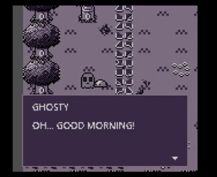

Midas: The Accursed King
A narrative-driven top-down RPG made for GBJAM 14. Midas, a disgraced king, works to restore his form and memories while chasing wealth and power, with multiple endings to uncover.


Designing inside a tiny box
GBJam's rules are the point: a 160×144 screen, four colors per frame, and only the Game Boy's buttons. Every piece of UI, from dialogue boxes to menus, has to earn its pixels and stay legible with almost no color to separate information.
Systems over content
With a jam timeline, I leaned on systems that generate variety instead of hand-authoring everything:
- Two power tracks: slaying unique enemies grows LEAD powers, while gold grows GOLD powers, so how you play shapes how Midas grows.
- Gold as a resource: healing costs gold from the SELECT menu, which turns wealth into a running decision.
- Branching endings: after finishing, players can continue and choose differently to see another ending.
Controls
Keyboard maps to the Game Boy layout (Z for A, X for B, arrows to move, Shift for SELECT, Enter for START), and gamepads work out of the box.
Programming and story: Maurice Birchard (Moninja). Art: Lexiianna. Music and SFX: PhantomAxis Studios and Haphaeu.
What I took from it
Hard constraints make UI decisions faster and sharper. With four colors, hierarchy has to come from shape, spacing and placement, which is good practice for any HUD.